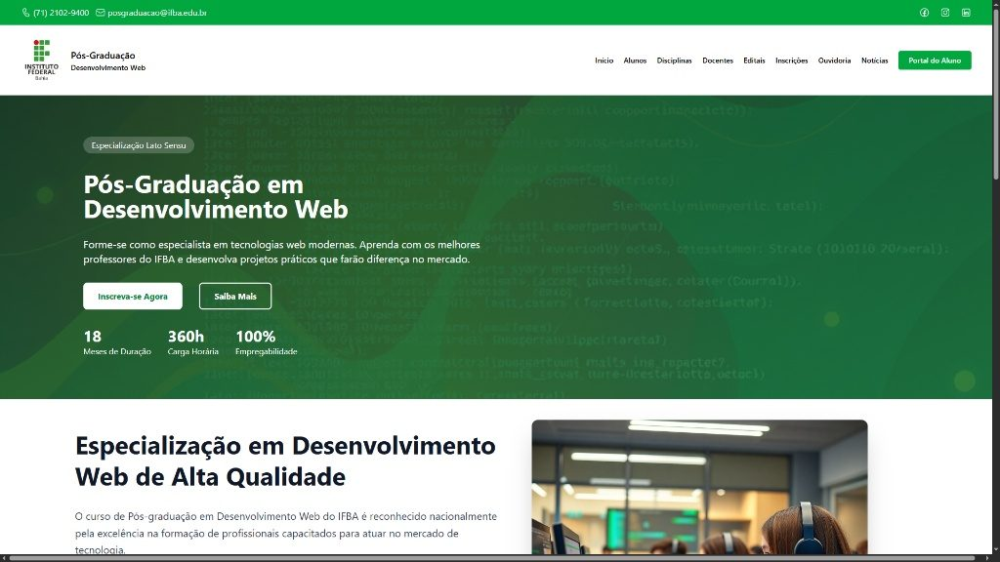

Desenvolvedor Front-End — CEPEDI
09/2025 — 07/2026 · Programa Futuro Digital
Como bolsista, desenvolvi interfaces em React — componentes modulares e reutilizáveis, estado com Hooks e consumo de APIs REST —, traduzindo protótipos do Figma em telas fiéis ao design, com responsividade completa e atenção às diretrizes de acessibilidade (WCAG).
Depois, como desenvolvedor júnior, atuei no sistema de gerenciamento de equipamentos do GIPAR, no Instituto Federal da Bahia, construindo as telas de cadastro e controle do inventário e integrando o front-end à API do sistema.
Nas duas fases trabalhei em equipe sob metodologia ágil (Scrum), com entregas revisadas por pares.
- React
- JavaScript
- Tailwind
- API REST
- Figma
- Scrum
- Git
